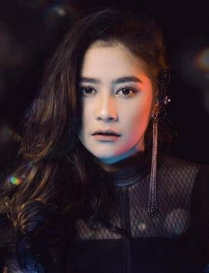

Welcome to the blog of Prilly Latuconsina
|
Prilly Latuconsina
Nama : Prilly Latuconsina Lahir: 15 Oktober 1996 (usia 23 tahun), Tangerang Tinggi: 1,54 m Pendidikan: SMA Negeri 7 Tangerang Penghargaan: Panasonic Gobel Award untuk Pemeran Wanita Sinetron Terfavorit, LAINNYA Saudara kandung: Tasha Khalida, Raja Latuconsina |

|